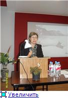
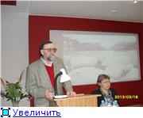
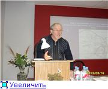
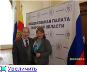

|
19 марта в Музее Калининского фронта под Тверью (посёлок Эммаус) состоялась научная конференция «1943 год в истории Тверского края: результаты исследования, проблемы, дискуссии. К 70-летию освобождения территории Тверской области от немецко-фашистских захватчиков».
А 1 марта 2013 года в Центральном музее Великой Отечественной войны на Поклонной горе совместно с Тверским государственным объединенным музеем состоялось торжественное открытие тематической выставки «Ржев. Возвращенная память», посвященной 70-летию окончания Ржевской битвы и освобождения территории области от немецко-фашистских захватчиков». Названия сходны, но на Поклонной горе говорилось о Ржевской битве, а в Музее Калининского фронта слова Ржевская битва из названия конференции исчезли. Почему?
Напомним, что на территории Тверской области находятся: Ржев, Старица, Погорелое Городище, Зубцов, Оленино, Нелидово, Белый – райцентры, образующие в 1942 – 1943 годах северный периметр Ржевско-Вяземского выступа.
…Организаторами конференции в Музее КФ выступили: ГБУК «Тверской государственный объединенный музей» (ТГОМ); ГБУК «Тверская областная универсальная научная библиотека им. Горького» (ТОУНБ); ТООО «Тверское областное краеведческое общество».

На пленарном заседании первая с докладом «1943 год в истории Тверского края» выступила Светлана Александровна Герасимова (ТГОМ), главный научный сотрудник, кандидат исторических наук. Она сообщила, что в Музее на Поклонной Горе формулировка "70-летие окончания Ржевской битвы" появилась не по воле научных сотрудников ТГОМ, а по настоянию ржевских чиновников.
Научный сотрудник Музея Калининского фронта Евгения Владимировна Виноградова поведала о Военно-патриотической работе своего Музея с посетителями разных категорий.
Профессор исторического факультета ТвГУ, доктор исторических наук Надежда Владимировна Середа осветила тему: «Современная трактовка понятий «событие» и «факт» и некоторые вопросы Великой Отечественной войны». Профессор подчеркнула роль субъекта в локальной истории.
После пленарного заседание работали две секции: «История боевых действий» (ведущая Светлана Герасимова) и «Работа тыла и увековечение памяти» (н. с. исторического отдела ТГОМ Елена Викторовна Орлова).
На секции «История боевых действий» сошлись главные оппоненты – с одной стороны авторы концепции Ржевской битвы С.А.Герасимова и старший научный сотрудник Ржевского краеведческого музея Олег Александрович Кондратьев, с другой - доктор военных наук Михаил Дмитриевич Хетчиков, председатель Тверского регионального научного военно-исторического центра, полковник запаса, и тверской историк Николай Иванович Сошин. Яркие представители военной науки, Хетчиков и Сошин опровергали термин «Ржевская битва», придерживаясь принятого деления военных действий на Ржевско-Вяземском плацдарме на четыре стратегические наступательные операции советских войск.
Темы секционных докладов:
- О.А. Кондратьев: «Освобождение города Ржева и Ржевского района. Декабрь 1942 – март 1943 гг.»;

Олег Александрович Кондратьев и Светлана Александровна Герасимова активно внедряют в научный оборот термина "Ржевская битва"
- преподаватель общественных дисциплин ГБОУ СПО «Старицкий колледж» Александр Владимирович Шитков: «Старица во времена Великой Отечественной войны: неизвестное об известном».

Значительное место в выступлении А.В.Шиткова заняло освещение подвига протоиерея Ильинского храма Иоанна Соколова;
- Кандидат педагогических наук Ольга Михайловна Кузьмина, доцент Тверского гос. технического университета: «Народные песни Великой Отечественной войны как часть фронтовой и бытовой жизни»;
- Н.И.Сошин: «"Ржевская битва" - феномен тверской историографии Великой Отечественной войны»;

15 марта 2013 года. Члены Общественной палаты Тверской области Михаил Дмитриевич Хетчиков и Тамара Терентьевна Карякина - уроженцы Сибири.
- М.Д.Хетчиков: «О правомерности введенных и вводимых в научно-практический оборот понятий военной историографии»;
- Кандидат исторических наук Екатерина Александровна Селунская, ведущий архивист Тверского центра документации новейшей истории (ТЦДНИ): «Документы штаба партизанского движения Калининской области в ТЦДНИ»
- Заочное выступление дочери Андрея Еремёнко, командующего войсками Калининского фронта в апреле – октябре 1943 года - Татьяны Андреевны Ерёменко (Москва) касалось подробностей действий Калининского фронта: «Торопецкая операция как одно из звеньев в цепи наступательных операций Красной Армии в зимней кампании 1941-1942 годов; её опыт и уроки».
Вторая секция: «Работа тыла и увековечение памяти».
1. Алексеева Галина Николаевна, ГБОУ СПО «Торжокский государственный промышленно-гуманитарный колледж», заместитель директора по воспитательной работе: «Увековечение событий и героев военного времени как одно из направлений гражданско-патриотического воспитания студентов колледжа».
2. Кобелева Юлия Александровна, ГБОУ СПО «Торжокский государственный промышленно-гуманитарный колледж», преподаватель: «Помощь жителей города Торжка и Торжокского района Калининскому фронту».
3. Бодрова Наталья Михайловна, Осташковский краеведческий музей, заведующая: «История создания памятника партизанам Великой Отечественной войны 1941-1945 гг. в городе Осташкове».
4. Муратова Галина Ивановна, Бельский краеведческий музей, заведующая: «Город, который мы потеряли».
5. Пустынникова Елена Александровна, Тверь, Центральная городская библиотека им. А.И. Герцена, заведующая сектором отдела краеведческой информации: «Общегородская эстафета «Память в граните».
6. Сидорова Антонина Ивановна, Тверской областной дом народного творчества, заведующая сектором историко-патриотической работы: «Выставочная деятельность Музейно-выставочного центра им. Л. Чайкиной ТОДНТ (на основе исторической части коллекции)».
На совместном итоговом заседании состоялся жаркий обмен мнениями. Были подведены итоги конференции и принято решение провести осень 2013 года новую, более конкретизированную конференцию, посвящённую боевым действиям на Ржевско-Вяземском плацдарме.
И. Мангазеев.
|